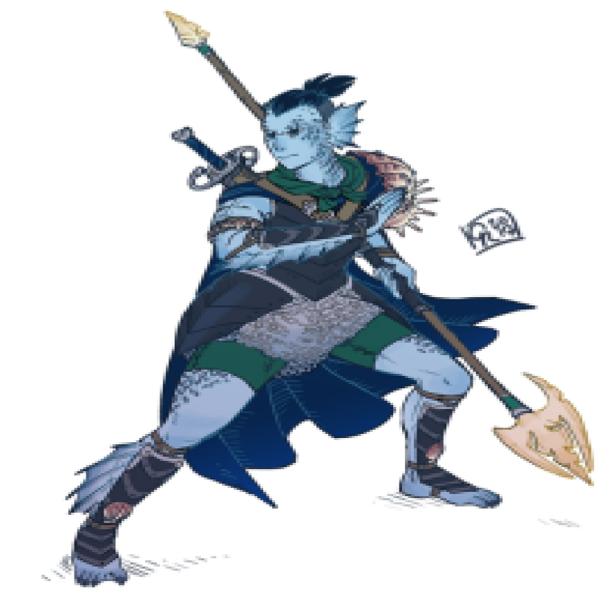

<div class="hero-card">
	<div class="hero-card__container">
		<div class="hero-card__item">
			<div class="hero-card__element">
				<p class="hero-card__name">Имя: Сайд</p>
				<div class="hero-card__img"></div>
			</div>
			<div class="hero-card__characteristic hero-card__element">
				<h2 class="hero-card__characteristic-head">Характеристики:</h2>
				<div class="hero-card__characteristic-container _container-white">
					<div class="hero-card__characteristic-item">
						<p class="hero-card__characteristic-item-info">Сила +5</p>
						<p class="hero-card__characteristic-item-info">Ловкость +1</p>
						<p class="hero-card__characteristic-item-info">Телосложение +4</p>
						<p class="hero-card__characteristic-item-info">Интеллект +2</p>
						<p class="hero-card__characteristic-item-info">Мудрость 0</p>
						<p class="hero-card__characteristic-item-info">Харизма 0</p>
					</div>
					<div class="hero-card__characteristic-item">
						<p class="hero-card__characteristic-item-info">Акробатика -1</p>
						<p class="hero-card__characteristic-item-info">Ателетика +5</p>
						<p class="hero-card__characteristic-item-info">Внимательность 0</p>
						<p class="hero-card__characteristic-item-info">Выживыние +5</p>
						<p class="hero-card__characteristic-item-info">Выступление +1</p>
						<p class="hero-card__characteristic-item-info">Запугивание 0</p>
					</div>
					<div class="hero-card__characteristic-item">
						<p class="hero-card__characteristic-item-info">История +2</p>
						<p class="hero-card__characteristic-item-info">Ловкость рук 0</p>
						<p class="hero-card__characteristic-item-info">Магия +3</p>
						<p class="hero-card__characteristic-item-info">Медицина +2</p>
						<p class="hero-card__characteristic-item-info">Обман +1</p>
						<p class="hero-card__characteristic-item-info">Природа +3</p>
					</div>
					<div class="hero-card__characteristic-item">
						<p class="hero-card__characteristic-item-info">Проницательность 0</p>
						<p class="hero-card__characteristic-item-info">Религия +2</p>
						<p class="hero-card__characteristic-item-info">Скрытность -1</p>
						<p class="hero-card__characteristic-item-info">Убеждение 0</p>
						<p class="hero-card__characteristic-item-info">Уход за животными +3</p>
						<p class="hero-card__characteristic-item-info">Анализ 0</p>
					</div>
				</div>
			</div>
		</div>
		<div class="hero-card__item">
			<div class="hero-card__character hero-card__element">
				<h2 class="hero-card__character-head">Характер:</h2>
				<ol>
					<li class="hero-card__character-item">Честность: Ваш персонаж всегда говорит правду и держит свои обещания, стремясь к справедливости и надежности во всех отношениях.</li>
					<li class="hero-card__character-item">Нейтралитет : Ваш персонаж старается сохранять нейтралитет и объективность в конфликтах, стремясь найти компромисс и справедливое решение.</li>
					<li class="hero-card__character-item">Нетерпимость: Иногда вы проявляете нетерпимость к идеям или поведению, которые не соответствуют вашим убеждениям, что может приводить к напряженным отношениям с окружающими</li>
				</ol>
			</div>
			<div class="hero-card__history hero-card__element">
				<h2 class="hero-card__history-head">Тритон - Ретарий</h2>
				<p class="hero-card__history-item">Тритоны немного ниже чем люди, в среднем около 5 футов (1,5 метра) в высоту. Ваш размер — Средний.</p>
				<p class="hero-card__history-item">В древности, в мрачные времена давно позабытых лет, тритоны возникли как древняя и благородная раса. С могучими плавниками и изящными телами, они стали хранителями океанских глубин, обладателями мудрости и силы.</p>
				<p class="hero-card__history-item">Веками тритоны вели жестокую войну с гигантами, колоссальными тварями, чьи громадные тела отражали величие и силу морского царства. Гиганты использовали огромные якоря из затонувших кораблей как оружие, превращая их в смертоносное бедствие. Они охотились на китов, утоляя свою жажду крови и ради пропитания.</p>
				<p class="hero-card__history-item">Искалеченные войной и истощенные потерями, тритоны осознали, что продолжение кровопролитной схватки ведет лишь к безмерной разрушительной силе. В их сердцах родилась жажда мира и согласия.</p>
				<p class="hero-card__history-item">Оказавшись мастерами дипломатии и торговли, тритоны предложили гигантам новую перспективу. Они принесли им свое сокровище - черный жемчуг, драгоценность, извлекаемую из глубин океана. Этот таинственный камень стал символом доверия и сотрудничества, подарком, который призывал гигантов к новому началу.</p>
				<p class="hero-card__history-item">Гиганты, пораженные благородством и щедростью тритонов, приняли это предложение. Они осознали, что их голод и жажда власти несут лишь разрушение и страдание, тогда как сотрудничество и дружба могут принести истинное благополучие. Гиганты стали верными союзниками и непоколебимой защитой тритонов.</p>
				<p class="hero-card__history-item">История тритонов стала вдохновением для всех мировых сообществ, напоминая о том, что даже самые страшные враги могут найти мир и примирение, а сила дружбы и сотрудничества способна преодолеть любые преграды, превращая вражду в надежду и сплочение.</p>
				<p class="hero-card__history-item">Признанные защитники океанских глубин, в последние годы благородные тритоны стали все более и более активными в мире на поверхности.</p>
				<h4>Моя личная цель: </h4>
				<p class="hero-card__history-item"></p>
			</div>
		</div>
		<div class="hero-card__item">
			<div class="hero-card__inventory hero-card__element">
				<h2 class="hero-card__inventory-head">Инвентарь:</h2>
				<div class="hero-card__inventory-container _container-white">
					<div class="hero-card__inventory-item">
						<p class="hero-card__inventory-item-info"></p>
					</div>
				</div>
			</div>
			<div class="hero-card__spells hero-card__element">
				<h2 class="hero-card__spells-head">Способности:</h2>
				<div class="hero-card__spells-container _container-white">
					<div class="hero-card__spells-item">
						<h4 class="hero-card__spells-item-head">Как рыба в воде</h4>
						<p class="hero-card__spells-item-info">Вы способны дышать под водой и искусно плаваете</p>
					</div>
					<div class="hero-card__spells-item">
						<h4 class="hero-card__spells-item-head">Водное копье</h4>
						<p class="hero-card__spells-item-info">Вы способны наполнить свое копье силой воды при броске и оно нанесет удвоенный урон</p>
					</div>
					<div class="hero-card__spells-item">
						<h4 class="hero-card__spells-item-head">Водяная стена</h4>
						<p class="hero-card__spells-item-info">Вы способны создать стену или кольцо воды, которое считается труднопроходимой местностью и дальнобойные атаки будут совершаться с помехой. Стена существует пока действует заклинание, во время чего вы не способны совершать какие либо действия.</p>
					</div>
					<div class="hero-card__spells-item">
						<h4 class="hero-card__spells-item-head">Оседлать волну</h4>
						<p class="hero-card__spells-item-info">Во создаете волну воды, которая сбивает с ног противников (противник кидает спасбросок, нельзя сбить гигантов) и оставляет за собой водную гладь, по которой вы имеете ускоренное перемещение и способность скрыться</p>
					</div>
					<div class="hero-card__spells-item">
						<h4 class="hero-card__spells-item-head">Тройной удар</h4>
						<p class="hero-card__spells-item-info">После создания водной глади вы способны атаковать на следующем ходу троих противников одновременно</p>
					</div>
					<div class="hero-card__spells-item">
						<h4 class="hero-card__spells-item-head"><span class="_color-golden">Легендарная способность</span> - Гнев Бури</h4>
						<p class="hero-card__spells-item-info">Персонаж способен вызывать мощные штормы и водные смерчи. Он может создавать огромные водяные волны, обрушивать их на врагов, вызывать ливни и грозы. Эта способность позволяет персонажу контролировать погоду и наносить разрушительные удары водными силами. Наносит урон всем персонажам в большом радиусе - 3к12</p>
					</div>
				</div>
			</div>
		</div>
		<div class="hero-card__item">
			<div class="hero-card__element">
				<h4>Инициатива</h4>
				<p>0</p>
				<h4>Кость хитов</h4>
				<p>2к8</p>
			</div>
			<div class="hero-card__equip hero-card__element">
				<h2 class="hero-card__equip-head">Экипировка:</h2>
				<div class="hero-card__equip-container _container-white">
					<h3>Оружие (сети, копья):</h3>
					<div class="hero-card__equip-item">
						<h4 class="hero-card__equip-item-head">Заостренный Трезубец тритона</h4>
						<p class="hero-card__equip-item-info">Трезубец можно использовать как метательное или колющее оружие. Имеет привязанную сетку в нижней части 3 (1к8) меткость +2</p>
					</div>
					<h3>Доспехи (легкие):</h3>
					<div class="hero-card__equip-item">
						<h4 class="hero-card__equip-item-head">Чешуйчатые ботинки Тритонов</h4>
						<p class="hero-card__equip-item-info">+1 к защите</p>
					</div>
					<div class="hero-card__equip-item">
						<h4 class="hero-card__equip-item-head">Чешуйчатый доспех Тритонов</h4>
						<p class="hero-card__equip-item-info">+1 к защите</p>
					</div>
					<div class="hero-card__equip-item">
						<h4 class="hero-card__equip-item-head">чешуйчатые браслеты Тритонов</h4>
						<p class="hero-card__equip-item-info">+1 к защите</p>
					</div>
					
				</div>
			</div>
			<div class="hero-card__stats hero-card__element">
				<div class="hero-card__stats-container">
					<h2 class="hero-card__stats-head">Жизни:</h2>
					<p class="hero-card__stats-count _img-heart">19</p>
				</div>
			</div>
			<div class="hero-card__stats hero-card__element">
				<div class="hero-card__stats-container">
					<h2 class="hero-card__stats-head">Класс брони:</h2>
					<p class="hero-card__stats-count _img-shield">13</p>
				</div>
			</div>
			<div class="hero-card__element">
				<h2>Языки:</h2>
				<div class="_container-white">
					<p>Общий, Тритонский</p>
				</div>
			</div>
		</div>
	</div>
</div>